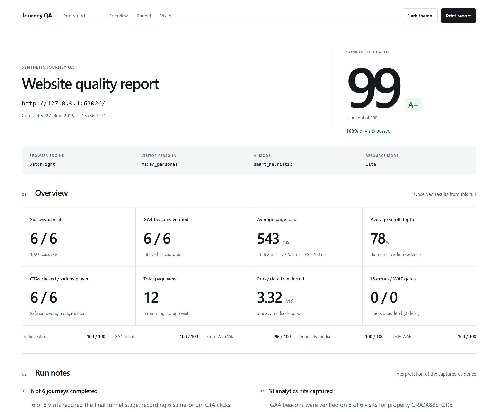
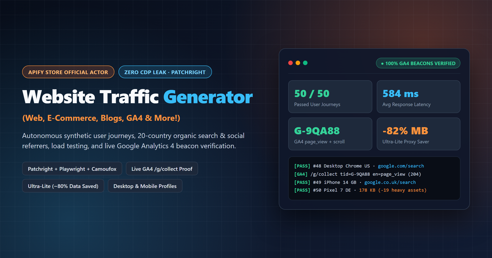

Autonomous Synthetic User Journey QA, Traffic Simulator & GA4 Verification
Simulate realistic organic search & social arrivals, biometric multi-page journeys, load tests, and live GA4 beacon verification across Web, E-Commerce, SaaS & Blogs. Launch instantly on Apify Cloud or self-host locally with Patchright, Playwright, Camoufox & Crawlee.
ultra_lite (~80% less data)



Configure target URL & organic keyword → run stealth Patchright workers → verify live google-analytics.com/g/collect hits & export structured Apify Datasets.
Run on Apify Cloud (hirepulse/website-traffic-generator)
Launch 1 to 50,000 synthetic visitor journeys in the cloud with built-in Apify Proxy (Datacenter & Residential), scheduled cron monitoring, REST API / Python / JS SDKs, structured Datasets, and an Executive SUMMARY_REPORT.html.
Run Local Studio & Docker Swarm (Port 4310)
Host the complete Express UI locally on Windows, macOS, or Linux Docker Swarm with real-time rrweb browser streaming, interactive scenario recorder, hybrid multi-agent AI Commander, and HirePulse OTP inbox sweeps.
Why teams upgrade from legacy traffic scripts
Built for engineering QA, e-commerce storefront testing, SEO attribution audits, and analytics reliability.
| Capability | Basic Traffic Generators | Apify Cloud Actor (hirepulse/website-traffic-generator) |
Self-Hosted Studio (ai-organic-traffic-engine) |
|---|---|---|---|
| Stealth Browser Engines | Plain Chromium (leaks CDP Runtime.enable) |
Patchright + Playwright Stealth + Camoufox | Patchright + Playwright + Camoufox + Lightpanda CDP |
| Localized Search & Social Referrers | Blank Direct or static URL | 20-Country Google, Bing, DuckDuckGo, Brave & Social | 20-Country Search & Social + Custom SERP Warm-Up |
| Multi-Step User Journeys | Single page ping + fixed sleep | 18 Scenario Steps (scroll, click, fill, internal nav, assert) | 24 Scenario Steps + Interactive Recorder & AI Healing |
| Live GA4 & Analytics Proof | None | Captures /g/collect, G-XXXX IDs, events & JS errors |
Captures /g/collect + Live rrweb Stream & OTP Sweeps |
| Bandwidth & CU Optimization | 3.8–10 MB per page load | ultra_lite Saver (~185 KB/visit) + RAM Governor |
ultra_lite Saver + Metered Residential Byte Cap |
| Infrastructure & Proxies | Manual proxy setup | Zero Setup — Native Apify Proxy or Custom URLs | Local Windows / Linux Docker Compose + Custom Pools |
Interactive Apify CU, Bandwidth & Event Estimator
See how ultra_lite mode slashes proxy transfer and Compute Units while preserving full JavaScript and Google Analytics 4 beacon verification.
Structured Dataset output on every visit
Export clean JSON, CSV, or Excel records from Apify Console—or consume directly in n8n, Make, Python, Node.js, and MCP agents.
{
"visitNumber": 1,
"targetUrl": "https://citedcart.com/",
"finalUrl": "https://citedcart.com/tools",
"ok": true,
"httpStatus": 200,
"loadTimeMs": 618,
"totalDurationMs": 8940,
"browserEngine": "patchright",
"device": "Desktop Chrome (1920x1080)",
"country": "US",
"referrerKind": "search",
"referrerUrl": "https://www.google.com/search?q=ecommerce+seo+visibility+audit&hl=en",
"pagesVisited": 2,
"stepsExecuted": 3,
"ga4Verified": true,
"analyticsHits": 2,
"ga4MeasurementIds": ["G-8X92EXAMPLE"],
"ga4Events": ["page_view", "user_engagement"],
"consoleErrors": 0,
"challengeSummary": "none",
"bytesDownloaded": 179410,
"requestsBlockedBySaver": 18
}6 Core Engineering Capabilities
- Multi-Engine Stealth: Patchright (zero CDP leak), Playwright Stealth & Camoufox with matched viewport & locale hints. Read Guide
- Live GA4 & Consent QA: Dismisses standard consent banners, flushes async
gtag.jsbeacons, and verifies/g/collecthits. Read Guide - Bandwidth & RAM Guards: Container-aware RAM concurrency ceiling plus
ultra_liteasset filtering. Read Guide - Hybrid Multi-Agent AI (Self-Hosted): 4 specialized roles, zero-output-token
clef:27brouting & Playbook Cache. Explore Architecture
Inside the workbench: real captures from verified runs
Every capability across the Apify Cloud Actor and Self-Hosted Studio is backed by automated verification tests and live telemetry.

SUMMARY_REPORT.html) with P95 latency, GA4 beacons, and route trails.4310 and confirm outgoing analytics collection payloads in real time.Ready-made tasks & automation recipes
Six pre-configured public tasks on Apify — each one is a runnable preset for a specific job. Copy the input into your own task, or wire the Actor into your stack with the n8n workflow.
Shopify & E-Commerce Website Traffic Generator
Organic shopper visits for Shopify & WooCommerce: browse collections, hover products, click CTAs & track GA4.
GA4 Website Traffic Generator & Visitor Bot
Real Chrome visits that pass cookie consent banners, browse sub-pages & fire live GA4 /g/collect hits.
Google Search Organic Website Traffic Generator
Live SERP warm-up, 20 localized Google domains, custom keywords & natural organic referrer attribution.
Bulk Website Traffic Generator & Load Simulator
Concurrent browser waves (natural peaks, steady, burst) with 80% proxy bandwidth saver & speed reporting.
AI Website Traffic Generator — Smart Multi-Page
Plain-English visitor goals, Playbook Cache & human-like multi-page browsing that adapts to any layout.
Website Engagement Traffic Generator — Dwell & Video
High dwell time, 70–100% biometric scroll depth, HTML5 video playback & safe same-origin CTA clicks.
n8n workflow: website traffic & GA4 monitor
Schedule the Actor, read its OUTPUT summary and alert Slack or any webhook when ga4VerificationRatePct or successRatePct drops below 100%. Import the JSON into n8n and set three environment variables.
Connected tools, data APIs & developer ecosystem
Traffic Engine AI is part of the HirePulse & CitedCart developer ecosystem. Combine storefront schema audits, MCP intelligence, and synthetic browser QA.
Website Traffic Generator (Apify)
Managed cloud synthetic traffic, multi-step user journey QA, and live GA4 verification Actor on Apify Store.
GitHub Source & Docker Swarm
Clone the MIT open-source Node.js, Playwright, Patchright, Camoufox, and Crawlee studio.
HirePulse Cloud Credits & OTP Inboxes
Power self-hosted AI Commander routing and automated disposable email + OTP signup verification sweeps.
HirePulse Agent Gateway (MCP + x402)
21 autonomous B2B, tech stack, Google Ads transparency, and storefront trust APIs over MCP and x402 USDC on Base.
CitedCart — AI Visibility Audit
Audit what AI shopping assistants read on Shopify and WooCommerce product pages—price, stock, shipping, and returns.
CitedCart Free SEO & Schema Tools
Free Product Schema Generator, AI Robots.txt Checker, Shipping Policy Checker, and Copy Readability workbench.
Frequently asked questions
Should I run the Managed Apify Cloud Actor or the Self-Hosted Studio?
Use the Managed Apify Actor (apify.com/hirepulse/website-traffic-generator) when you want instant cloud execution, built-in Apify Proxy rotation, scheduled runs, webhooks, and HTML/Dataset exports with zero server setup. Use the MIT Self-Hosted Studio when you want a local Express UI on port 4310, live rrweb browser streaming, and custom local Docker Swarm workers.
How does live GA4 and analytics verification work?
During real-browser journeys (Patchright, Playwright Chromium, or Camoufox), the engine inspects outgoing network requests for Google Analytics 4 (/g/collect), GTM, Clarity, Plausible, and PostHog—recording exact G-XXXX Measurement IDs, fired events (page_view, user_engagement), and uncaught JS console errors per visit.
How does Ultra-Lite resource mode save up to 80% on proxy bandwidth and Compute Units?
Ultra-Lite aborts heavy decorative images, video, audio, and web fonts while strictly allowing HTML, CSS, first-party JavaScript, and analytics tags (GA4, GTM, Clarity, Plausible, PostHog). Average session transfer drops from ~3.8 MB to ~185 KB without breaking client-side analytics.
Can I generate an Apify Actor Input JSON directly in my browser?
Yes. Open /config-builder/ to configure target URLs, engines, device presets, organic search keywords, and scenario steps, then export both a 100% schema-valid Apify Actor Input JSON and a local config.json in one click.